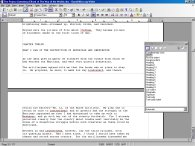
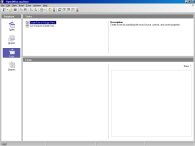

Snapshot builds showing the progress on our way towards OpenOffice.org 2.0 will be released every two weeks. Download here.
| Writer | Calc | Impress |
|  | |
|
| Draw | Database | |
|  |
German Screenshots: OOo 1.9.69 / 1.9.72 here.
German Screenshots: here (external).
French Screenshots: OOo 1.9.118 on Mac here.
Other Screenshots: OOo 1.9.x here.
Turkish Screenshots: OOo 1.9.68 here.